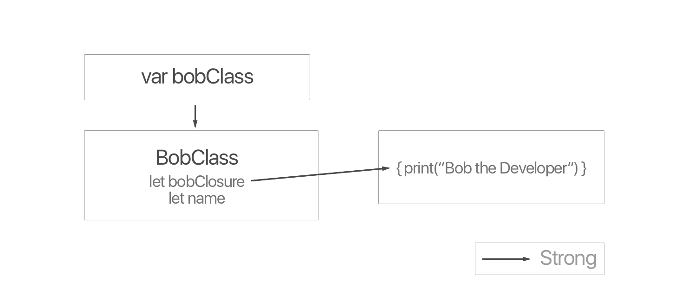

Writing Guideline
When you first attempt to produce your own content, it could be daunting at first. It was the same. However, I soon discovered my voice and a few key steps that took my writing skill and rapport to the next level. This list is created based on my personal experience. Feel free to dismiss if you are not comfortable with any of the followings.
Share your journey: The best way to write is as if you were telling a story to your younger self when you first encountered the topic. The reader would share and feel your empathy.
Use emojis only if you want to get your meaning across: Articles filled with an excessive number of emojis may give off an impression with a lack of credibility and neediness for attention. Use them sparingly.
Begin with why: It is mostly good to begin by sharing the motivation why you've decided to share the piece of content. It helps the reader understand what he/she needs to know prior and the level of difficulty by understanding its context. For example, before I introduce
generics, I'd write about my past. You can find the example hereShow vulnerability if any: It is okay for you to let the reader know that you are new to the topic. The truth whether you are experienced in that topic does not matter in comparison to your ability to deliver. They are here to learn from you.
Show credentials if any: This is not required. The number of recommendations and shares will speak for themselves. It is still an good idea to inform the reader why he/she has to care about what you have to say.
Drawings speak for themselves: I love visualizations, so do most readers. The diagram, however, has to look simple but clear. The below is an example. If you need any help, I can help you draw one.

Note: Although the goal is to provide phenomenal product and service, you don't have to present the perfect piece at your first trial. I look for gradual improvement and consistency. In fact, "perfect" is a made-up state. We will never get there because it does not exist. However, we strive for near perfection.